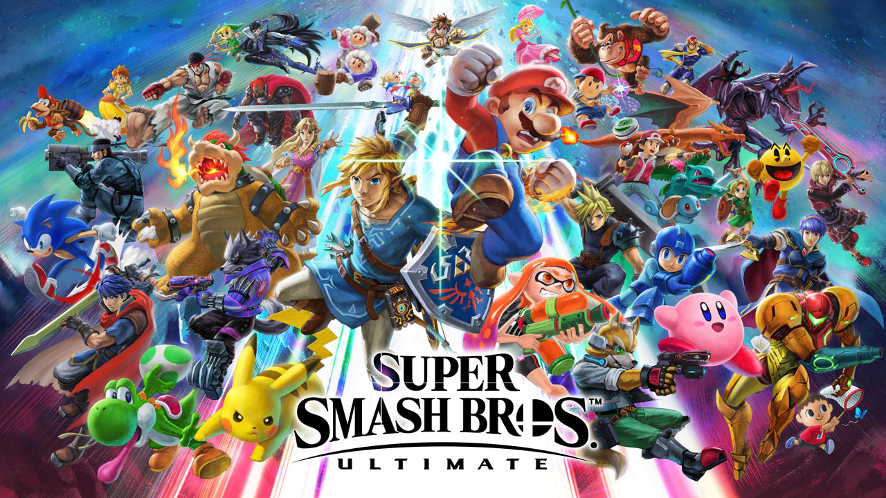

My Interests!
Videos
As I have stated before in my homepage, I love videos! not as in watching them, but as in creating them. I have studied and have experience with film making in general, from a simple idea, story boarding, recording, editing to its final product. I have tons of videos created on my YouTube Page that I have created as early as 2006. Most of my videos there is about Machinimas (Videos using Games as a Source, like Super Smash Bros, Halo or Source FilmMaker) as I can easy create a full fledged story or just create something that is enjoyable for the moment for everyone to watch.
The Editing phase is my favorite part of the film production, as you can see first hand of how the movie will turn out to be. The Recording phase is also really fun, especially when you are working with a scene and see the actors do the thing. With all the technical stuff that comes with it as well, like setting up the lightning, audio that needs to be recorded
Have 3 videos that I have picked out: One I
am proud off, one that's pure editing and one that's more technical in
Machinima approach
Games
Games is my second passion, both playing them and creating them. When I
was 5 years old, me and my sister got a Nintendo 64 as a Christmas gift
from our mom with the game "Super Mario 64" and since the day we got to
play it, I was in love with games. It is really hard to pin out my
favorite game as my absolute favorite, but I can pick 5 games that I
really love in no particular order.
The games I love is:
- Super Smash Bros Ultimate
- Splatoon Series
- Xenoblade Chronicles
- Pokemon Series
- Super Mario Galaxy
Super Smash Bros is an game series that I have loved since it was released on the 64 back in the day. It is also the game that I am playing competitive in, as I go to tournaments and play against really skilled people. Fun Fact, back in my town, I am the second Super Smash Bros Ultimate player on our Power Ranking list (PR for short) as between June to September, 2019. Here is the PR list in visual form of the best 10 players in our town.
Coding
Coding is something that has gotten my interests for the last decade, thanks to gaming. Just like why I love making videos, being able to see the progress by yourself when you do something is something I will always love, and coding is no exceptions.
My true introduction with coding were by hacking Super Smash Bros Brawl in the early 2010s. I self-learned how to make custom attacks, custom animations, models, and textures for the game and it was an experience. With this, I also learned more advanced hacking, such as "Hex Hacking", "Assemble Hacking" and "PowerPC" hacking for the same game but not as big as the precious one.
This led me to create really advance hacks
for the game, such as creating completely new characters, or a character
that can change itself to another character with Wii's limited memory.
I were also in a group that helped the progress to customize the game
further by, example, figuring out how the "PAT0" file to work and how to
make our own That was years ago tho, since currently I haven't hacked
the game as much as before. I go sometimes back to that game to create
machinimas (why I started hacking in the first place) but I don't create
huge hacking stuff there anymore.
But my interests for coding still exists. I
am doing a Game on my own with help by the RPG Maker Engine whenever I am not doing video
work.
With this program, I can create RPG Games. For the last 3 years, I have
been toddling and tinking with a game of mine that has tons of customize
coding and animations.
More about this another time, but have a Picture of the game as a small
preview!
Baking

I have a huge Sweet-tooth, so me loving sweets and baking is not a big
surprise.
This isn't as huge as the other 3 as I mentioned earlier, but being able
to be creative is something I really love.
I don't really have much money or time to actually bake, nor the tools
to do so. But when I am available to, I gladly pick up the whisker and
start whisking away.
One of my favorite desserts are Panna-cottas, when the cream has been
whiskered perfectly with either berries or chocolate sauce to complement
the good vanilla taste. Making them from scratch are really fun in my
opinion, as it requires precision and knowledge about the cream. Mud
cakes (a messy chocolate cake) and Fondant (A gooey chocolate muffin)
and really fun too, and extremely tasty~
While it is more about "food", but I also love making "Crepes". the process of making them reminds me of baking and I love having sweets on them, such as berries, chocolate or ice cream. Still trying to create the perfect crepe receipt whenever I eat crepes!